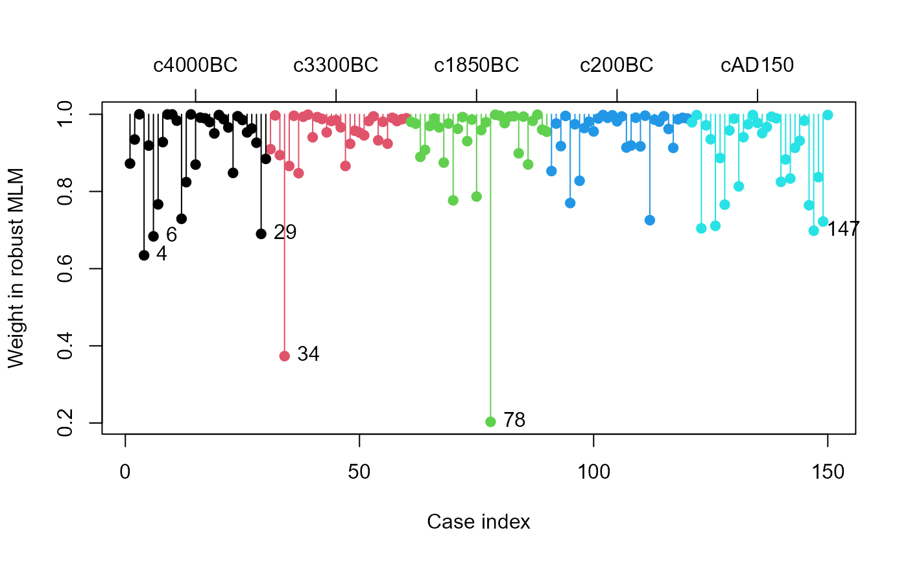
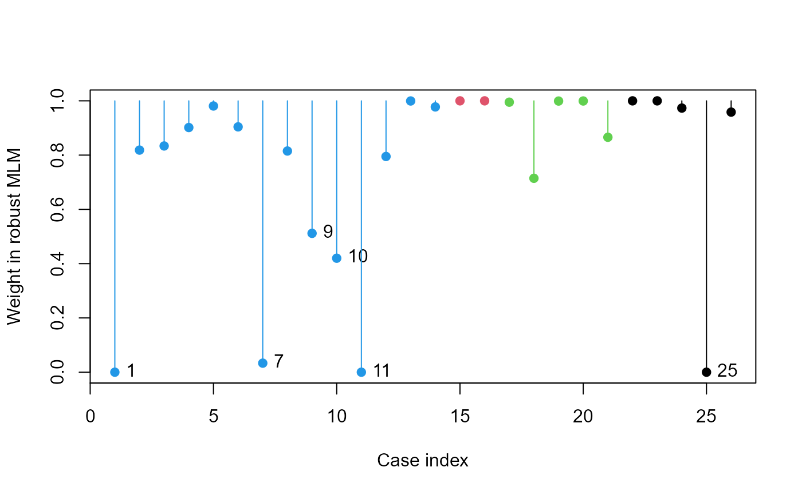
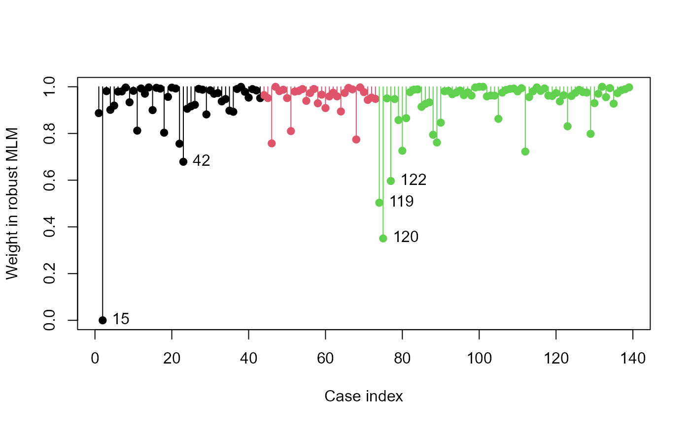

Plot observation weights from a robust multivariate linear models
Source:R/plot.robmlm.R
plot.robmlm.RdCreates an index plot of the observation weights assigned in the last
iteration of robmlm. Observations with low weights have large
residual squared distances and are potential multivariate outliers with
respect to the fitted model.
Arguments
- x
A
"robmlm"object- labels
Observation labels for point identification. If not specified, uses
rownamesfrom the original data- groups
Optional grouping variable, a factor with length equal to the number of observations, used to identify groups in the plot.
- group.axis
Logical; whether to draw an axis at the top identifying the groups. Not drawn if
groupsis missing.- id.weight
Threshold for identifying observations with small weights
- id.pos
Position of observation label relative to the point
- pch
Point symbol(s); can be a vector of length equal to the number of observations in the data frame.
- col
Point color(s). Multiple colors can be specified so that each point can be given its own color. If there are fewer colors than points they are recycled in the standard fashion.
- cex
Point character size(s)
- segments
logical; if
TRUE, draw line segments from 1.0 down to the point- xlab
x axis label
- ylab
y axis label
- ...
other arguments passed to
plot
Examples
data(Skulls)
sk.rmod <- robmlm(cbind(mb, bh, bl, nh) ~ epoch, data=Skulls)
plot(sk.rmod, col=Skulls$epoch, segments=TRUE)
axis(side=3, at=15+seq(0,120,30), labels=levels(Skulls$epoch), cex.axis=1)

# Pottery data
data(Pottery, package = "carData")
pottery.rmod <- robmlm(cbind(Al,Fe,Mg,Ca,Na)~Site, data=Pottery)
plot(pottery.rmod, col=Pottery$Site, segments=TRUE)

# SocialCog data
data(SocialCog)
SC.rmod <- robmlm(cbind( MgeEmotions, ToM, ExtBias, PersBias) ~ Dx,
data=SocialCog)
plot(SC.rmod,
col=SocialCog$Dx, segments=TRUE)
# label the groups
ctr <- split(seq(nrow(SocialCog)), SocialCog$Dx) |> lapply(mean)
axis(side = 3, at=ctr, labels = names(ctr), cex.axis=1.2)

# use the groups arg
colors = c("red", "darkgreen", "blue")
ids <- plot(SC.rmod,
groups=SocialCog$Dx,
col = colors,
pch = 15:17,
segments=TRUE)
 # the cases labeled and their weights
ids
#> 15 42 119 120 122
#> 0.0000000 0.6788939 0.5034684 0.3506323 0.5966688
# the cases labeled and their weights
ids
#> 15 42 119 120 122
#> 0.0000000 0.6788939 0.5034684 0.3506323 0.5966688